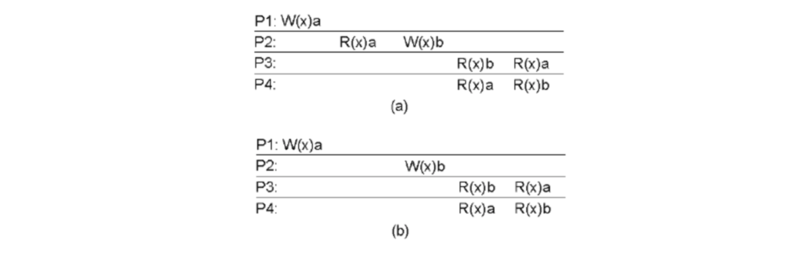

분산 시스템이 있을때 하나의 노드에서 에러가 나더라도 전체 네트워크에 영향을 미쳐서는 안된다. 분산시스템을 구축하는 이유는 빠른 계산처리와 안전성을 도모하기 위해서이다. 빠른 계산 처리라 함은 하나의 컴퓨터로 처리할수 있는 계산량의 한계가 정해저 있어 병렬 처리를 하기 위함 이다. 안정성은 하나의 Node에 Fault가 나더라도 예비 Node가 있어 Node가 Fault가 되는것에 대해 대비해야 한다.
장애 허용 시스템
장애 허용 시스템(Fault Tolerance System)은 하나의 컴포넌트가 fault가 발생해도 시스템 운영에 영향을 주지 않도록 설계된 시스템이다. 다음과 같은 점을 고려할 수 있다.
- 서버 이중화 : 복제 서버를 두어 fault tolearnce에 대비한다. Replicaton(병렬로 수행) 추가, Redundancy(장애 발생시 보조 시스템으로 활용) 추가 구성
- 복구 처리 : 롤백(roll-back) 또는 롤포워드(roll-forward) 복구
이때 이러한 특정 체크 포인트로 복구 하는 처리는 몇번을 하더라도 동일한 작동이 되도록 멱등(idempotent)이 보장 되어야 한다. 장애 허용 시스템은 인명이나 재산에 필수적인 자동차, 철도, 조산, 원자력 등의 분야에 적용이 될 수 있다.
읽기/쓰기에 대한 일관성 유지
데이터 유실을 대비해 복제 서버(replica)를 둘 필요가 있다. 복제서버를 두면 대역 폭이 증가해 성능을 개선시킬 수 있다. 데이터 중심의 일치 모델(Data centric Consistency Model)에서는 복제 서버는 분산 데이터 저장소(Distributed data. tore)를 공유해 사용할 수 있다. 이때 업데이트가 일어나게 되고 분산 저장소에서는 읽기/쓰기에 따른 일관성(Consistency)유지 되어야한다.
순차적 일관성(Sequential Consistency)은 P1에 Write(a), P2에 Write(b)를 수행한다고 했을때 읽기 동작은 P3나 P4에서나 동일한 시퀀스 순서를 유지해 R(b), R(a)로 읽든지, R(a), R(b) 순서로 읽든지 해야 한다. 인과적 일관성(Causal consistency)은 쓰기와 읽기라는 인과 관계만 일치하면 되는 일관성이다. P1에 W(a), P2에 W(b)라고 한 경우(concurrent write의 순서는 고려 하지 않음)는 읽기 동작을 수행하는 P3와 P4는 어떤 순서로 읽기도 상관 없다. P3가 R(a), R(b) 순서로 읽고 P4는 R(b), R(a)로 읽어도 무관하다. 즉 인과적 관련 명령(causally-related operations)을 보장해야하다.

복제 지연 문제
큰 데이터를 복제하는 경우 복제 지연 문제가 발생할 수 있다. 결과적 일관성(Eventual Consistency)을 고려할 수 있다. 결과적 일관성은 단기적으로 일관성을 일치만 최종적 일관성을 유지할 수 있는 방식이다. 최종적으로 일관성이 유지 되어 반영될 수 있는 내용이지만 최종적으로 반영 되지 않아 반영이 되지 않는 현상을 볼 수 있다. 이러한 경우 쓰기에 대한 블록을 나누고 P1이 write(a) P2가 write(b)로 단조 쓰기(monotonic write) 수행하고 나면 P3는 read(a), read(b)순으로 읽을 수 있다. NoSQL과 같은 분산 DB의 결과 이러한 결과적 일관성을 지원한다.
클라이언트와 서버간의 신뢰
분산 처리 시스템은 Point to Point 기반의 통신을 수행한다(TCP 프로토콜 기반). TCP 통신에 오류가 있다면 Server Crash가 발생한것이다. 즉 클라이언트가 Request를 보냈다면 서버는 요청을 받아 처리하며 크래시 없는 응답을 할 수 있어야한다. 이때 응답을 하지 못했다면 서버 크래시가 발생한 것이다.(505 에러와 같은 응답을 내보내는 상황)
더읽어보기
- designing data-intensive applications
- distributed systems principles and paradigms